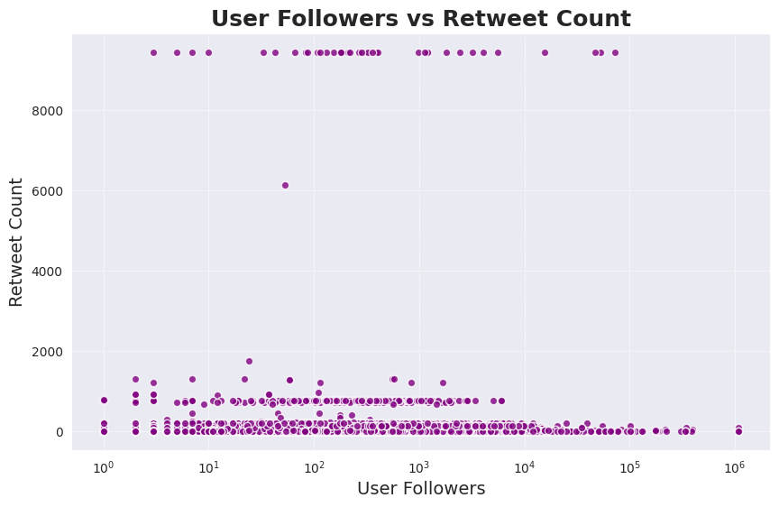

Tweet Source by Query

The first interactive visualization is a stacked bar chart of tweet sources by query.
Different bars for each of the queries are divided by colors into the types of devices from which the tweet was posted.
As some tweet sources are dominant compared to others, due to those devices being more commonly owned by Twitter users (ex. iPhone or Android), it is possible to select any number of tweet sources and exclude others.
This allows us to fully grasp their relationship in the different queries, potentially noticing considerable differences between the two sources when analyzing them as a duo, whose count may have looked very similar when looking at the entire set.

The first static visualization we have decided to produce is a scatterplot of the relationship between User Followers and Retweet Count, in fact, we put the first in the x-axes and the latter in the y-axes.
This plot allows us to determine whether it is required to have a big following on the platform in order to reach a wide audience and go viral.
On the other hand, they may show that having a higher number of followers is a prerequisite to having a viral tweet, as it makes it easier to reach a wider audience.
The results may indicate that that is not the case as the most popular tweets among those taken into consideration did not come from the accounts with the most followers, as there isn’t a linear relationship between the two variables.
This is a fundamental analysis of Twitter as a platform, as it defines whether the suggestion algorithms and timelines mechanism allows everyone to spread their ideas and reach a considerable audience, specifically using hashtags and keywords.